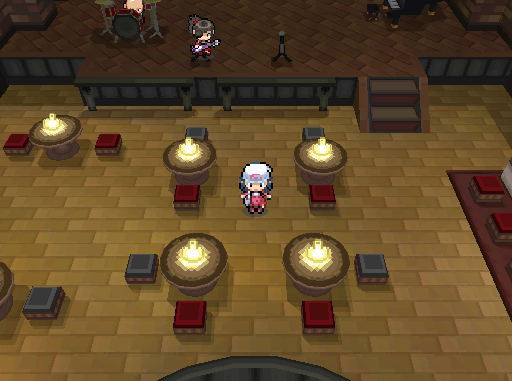

Pristine Lounge
| ||
 | ||
| ||
 |
The Pristine Lounge is a vibrant jazz club located in the northern district of Veilstone City, nestled at the foot of the Galaxias Pilot Plant and just above the underground area known as the Veilstain. The player character receives here their first Pokémon.
Description
A popular gathering spot for music lovers and Pokémon Trainers alike, the Lounge merges the energy of live jazz with the thrill of Pokémon battles in a stylish, urban setting.
At the heart of the venue is a wide stage with overhead lighting where performers showcase both their musical talents and their battling prowess. The main room offers a welcoming dining space lit by suffused lighting, complete with a bar that adds to the relaxing yet dynamic atmosphere. Artists also have access to a private dressing room, often used for meet-and-greets with fans.
Though renowned for its culture and events, the Pristine Lounge holds a somewhat sketchy reputation due to the presence of rougher crowds, including punks, gang members, and other colorful city dwellers. Nonetheless, it remains a hub of community energy and a magnet for both locals and travelers.
The Lounge is also known for organizing Pokémon battle tournaments for Trainers of various skill levels. Winners are often rewarded with rare Pokémon, making these events highly anticipated.
The club is managed by Lark and his bandmates, while ownership lies with Galaxias Novus. The building previously served as the Veilstone Gym, once overseen by Gym Leader Maylene, before being shut down in the aftermath of the Scandal. Seeking to restore life and culture to his hometown, Lark returned to Veilstone and established the Lounge within the old Gym’s walls.
The player is invited to the Pristine Lounge by Lark himself, under the directive of Agent Fortis, with the intent of receiving their starter Pokémon. However, upon meeting the player, Lark has a change of heart. Instead of handing over the Pokémon directly, he declares that the player must prove their worth by stepping onto the stage and defeating his bandmates—and ultimately Lark himself—in a series of intense Pokémon battles. Only by triumphing over the entire band will the player earn their starter and be permitted to leave the Lounge.
Following the climax of Chapter 1, the player encounters Lark again on the western bridge in Veilstone City. After this event, the player can return to the dressing room where Lark will now give them his Autograph. This autograph can be traded at the Solace Café to a merchant in exchange for a Bicycle.
After completing Chapter 4, the player can return to the Pristine Lounge to participate in advanced versions of the Tournament once every Friday night. These later tournaments feature tougher opponents and better rewards, the most sought-after being a collection of Vinyls. These special items let the player change the background music of their Homebase, as long as they’ve purchased the Record Player from the catalogue.
Items
Pokemon
Lark's Briefcase
Trainers
Busker Rank (Chapter 1)